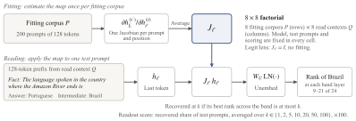

Abstract
Interpretability lenses show what an intermediate layer of a language model represents by mapping its hidden state onto the model's vocabulary. The Jacobian lens of Gurnee et al. (2026) first passes the hidden state through a linear map: the model's derivative of a late-layer hidden state with respect to that layer, averaged over a set of prompts. The lens therefore depends on a fitting corpus, the text those prompts are drawn from. The original work shows that a few prompts suffice, but it does not vary which text they come from. We vary it on EleutherAI's Pythia models, scoring each lens by how often it ranks a test prompt's annotated intermediate concept among its top tokens. On Pythia-410M, changing only the fitting corpus moves this readout score from 22.8 to 26.0 out of 100, against 19.8 for the logit lens, which fits nothing. Disjoint samples of one corpus agree far more closely than different corpora do, and the effect recurs at Pythia-1B and 2.8B. It is not explained by how much of each corpus appears verbatim in Pythia's training data or by any of twenty measured corpus and map statistics, and it persists as the fitting set grows from 25 to 800 prompts. The fitting corpus is therefore part of a Jacobian-lens measurement, and should be reported and varied like the model and the layer.
Key results
A Jacobian lens reads a language model's hidden states through a linear map averaged over a set of prompts. Hold the model, the test prompts and the scoring fixed, change only which text those prompts come from, and the lens reads differently.
Readout score of Pythia-410M's Jacobian lens across eight fitting corpora, averaged over read contexts. The logit lens, which fits nothing, scores 19.8.
Share of the variance that lies between corpora rather than between disjoint samples of one corpus, against a pre-registered threshold of 0.70.
The corpus ordering recurs at both, against criteria fixed before those models were scored.
The measurement
The logit lens applies a model's own final normalisation and unembedding to an intermediate hidden state, and has no parameters. The Jacobian lens first transports the hidden state hℓ with a linear map Jℓ: the model's derivative of its penultimate-layer state with respect to layer ℓ, averaged over prompts x from a fitting corpus P.
Setting Jℓ to the identity recovers the logit lens. Because Jℓ is an average over P, a different fitting corpus can give a different map. The read context, the text placed in front of the prompt being read, instead changes hℓ itself. Nothing in the method requires the two to match.
Test prompts
We evaluate on the 551 test prompts released with the lens, in six families: multi-hop facts, multilingual, order of operations, poetry, typo correction and word association. Each is annotated with an intermediate concept the model should compute on the way to its answer. In “Fact: The language spoken in the country where the Amazon River ends is”, the answer is Portuguese and the intermediate is Brazil. A lens does well on this prompt if Brazil ranks near the top at the middle layers. Each prompt is read after a 128-token passage from a read-context corpus, disjoint from every fitting prompt.
Readout score
- At each layer of the source's middle band (layers 9 to 21 of Pythia-410M's 24), rank the intermediate among all vocabulary tokens by the lens's logits.
- For a threshold k, the prompt counts as recovered if its best rank in the band is at most k.
- The readout score is the fraction of prompts recovered, averaged over k ∈ {1, 2, 5, 10, 20, 50, 100} and multiplied by 100.
If Brazil's best rank across the band were 7, the Amazon prompt would count at k = 10, 20, 50 and 100 but not at 1, 2 or 5, contributing 4/7 of a prompt. A score of 26 is therefore a mean over seven thresholds, not a success rate. Word association sits at the floor for every lens, the logit lens included, so scores use the other five families. This rule, any-layer recovery, is the source's own definition and the paper's primary; a stricter majority-layer rule, which requires the top k at half or more of the band's layers, is a sensitivity analysis.
Changing the fitting corpus changes the readout
Every cell uses the same model, test prompts and scoring. Only the corpus the map was fitted on (rows) and the passage placed before each prompt (columns) change.
Readout score at Pythia-410M, any-layer recovery
Swipe sideways to see every column.
The colour scale starts at the logit lens (19.8, read without a prefix). Hover a cell for its value; the table below lists all 64.
Show the numbers
Averaged over read contexts, the map fitted on GitHub scores 22.8 and the map fitted on StackExchange 26.0. Fitting and reading on the same corpus confers no detectable advantage, and GitHub is the worst fitting corpus in all five families.
How the variance among the 64 cells splits
Different corpora, not different samples
Two pre-registered tests ask whether the corpus effect is sampling noise, or the lexical diversity of the fitting text.
Both tests clear the thresholds fixed in advance
We refit maps on four disjoint document blocks from each of Pile-CC and Wikipedia. Source identity accounts for 0.989 of the variance among their scores. With the fitting prompts matched on type-token ratio, the share of distinct tokens in a window, the spread between five corpora stays at 22.7 pooled seed SDs, a unit that measures how far a score moves when only the fitting sample changes. Both tests were registered under majority-layer recovery, before any-layer became the paper's primary rule, and pass under it too (0.972 and 22.2).
Training-data exposure does not explain the ordering
Pythia's training data are published, so whether a corpus was seen in training can be measured rather than assumed.
Containment in Pythia's training data against the readout each corpus produces
Spearman −0.10 over eight corpora. Values below 0.002 are reported as no detectable match, not as absence from training: re-wrapping identical text can leave as little as 0.14% of its 32-grams intact.
Show the numbers
32-gram containment is the fraction of a corpus's 32-token windows that occur verbatim in Pythia's training data. If maps fitted on text Pythia saw more often read better, the three later corpora should read below the five Pile components. All three read inside their range, and GitHub, the most contained corpus, builds the worst map. Containment is a coarse proxy for exposure on eight corpora, so finer exposure mechanisms are not ruled out.
The effect replicates at Pythia-1B and 2.8B
The five Pile corpora were refit at 1B (200 prompts per map) and 2.8B (25) and compared with 410M on two criteria fixed before those models were scored.
Per task family, against each criterion
Show the numbers
Both criteria use z: the intermediate's logit minus the mean logit over the vocabulary, divided by the logits' standard deviation, at the band layer where it is largest. The agreement criterion asks Kendall's τ with the 410M corpus ordering to reach 0.6 in at least three of five families (τ = 1 for identical orderings). The spread criterion asks the between-corpus spread of z to exceed ten pooled seed SDs (R ≥ 10) in at least four of five. Both are met at both sizes. R is not comparable across sizes, because the 2.8B maps were fitted from 25 prompts. The 1.4B model is reported in the paper but not counted, because its numbers were seen before the criteria were fixed.
More fitting prompts do not remove it
The source shows the lens converges with few prompts. Convergence to one corpus's map is not invariance across corpora.
Readout-score points, Pythia-410M, any-layer recovery
The ratio, 0.32, misses the pre-registered flatness criterion of 0.25, so the curves are not strictly flat, but the corpus matters long after sampling noise has become small beside it. No statistic we measured identifies which property of a corpus makes its map read better: none of twenty statistics of the map and the corpus meets the criterion fixed for it. Several correlate strongly with the ordering, such as the dispersion of the per-prompt Jacobians (r = −0.95), and each collapses when one corpus, usually GitHub, is left out.
What this shows, and what it does not
Shows
- The readout score of a Jacobian lens depends on its fitting corpus by more than three points out of 100, far more than resampling within a corpus.
- Every fitted map beats the logit lens, by 4.2 to 7.1 points when read without a prefix, and maps fitted on a network with re-initialised transformer blocks read below it on 3 of 3 corpora, so the gain needs the trained computation.
- The corpus ordering recurs across five task families, disjoint fitting samples, and at 1B and 2.8B.
Does not show
- That the maps recover concepts Pythia represents. Pythia answers 3 to 6% of the test prompts at top-1, and a systematic bias, such as a map that promotes frequent tokens, is not ruled out. That needs a test set calibrated to Pythia's competence.
- Anything at frontier scale: the full factorial ran at 410M, and the 2.8B maps were fitted from 25 prompts.
- Which property of a corpus matters: corpus identity bundles domain, formatting and token statistics.
Recommendation. Report the fitting corpus with the model and the layer, and vary it, as fitting-set size already is.
Reproduce
Every statistic in the paper recomputes from the stored results in about a minute on a CPU:
git clone https://github.com/tarush-ai/fittingcorpus && cd fittingcorpus
uv sync
bash repro/01_setup_local.sh # vendors the Jacobian-lens reference implementation
bash repro/04_fetch_results.sh # the results JSON from Hugging Face, about 8 MB
bash repro/RUN_ALL.sh --tier T0 # recomputes every statistic in the paperThe fitted maps (16.2 GB) and every results file are on Hugging Face. Tier T1 re-scores every read from the stored maps on a CPU, and T2 refits maps on a GPU. Each experiment's pre-registration, with its decision rule fixed before it ran, is in the repository.
Citation
Download the workshop paper or view it on the NeurIPS 2026 page.
@inproceedings{gupta2026fittingcorpus,
title = {The Fitting Corpus Is Part of the Measurement:
Auditing a Jacobian Lens on {Pythia}},
author = {Gupta, Tarush},
booktitle = {Interpretability as a Science Workshop at NeurIPS 2026},
year = {2026},
url = {https://neurips.cc/virtual/2026/loc/sydney/165983}
}